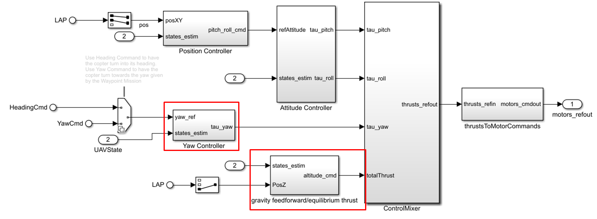

System Overview
This project encompasses the full mechanical design, firmware development, and simulation environment for a 1U CubeSat Attitude Determination and Control System (ADCS). The physical mechanism utilizes a custom, origami-inspired reaction wheel assembly to stabilize and point the satellite.
Control Theory & Simulation
- Quaternion Dynamics: Mathematical modeling completely avoids Euler angle gimbal lock, allowing for continuous and complex tumbling recovery maneuvers.
- PID Autotuning: The Simulink model features sophisticated PID blocks with anti-windup clamping to prevent motor saturation during aggressive orientation changes.
- State Estimation: An Extended Kalman Filter (EKF) aggressively filters noisy IMU and sun sensor data to provide a clean, accurate orientation vector to the flight computer.
Web-Based HIL Environment
To validate the firmware before flashing to the physical hardware, we built a React + Three.js Hardware-In-The-Loop (HIL) simulator. The embedded C++ firmware runs identically on the host machine, receiving simulated IMU packets via serial, and returning motor PWM commands. The web dashboard visualizes the resulting 3D rotation at 60fps alongside live angular velocity graphs.

3D Attitude Simulation with Live Telemetry

Simulink PID Control Diagram